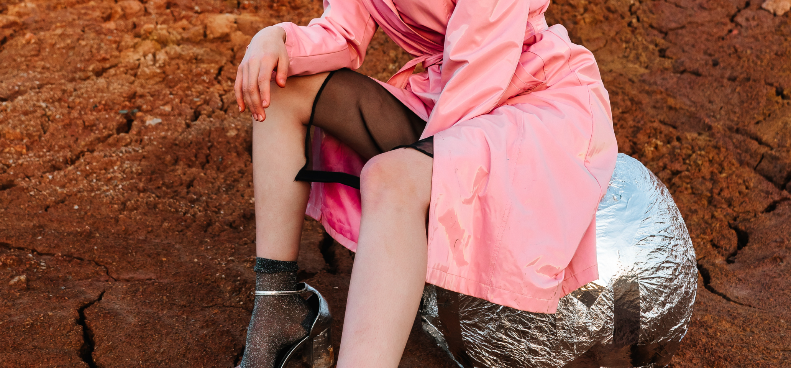
Neon Youth
Irreverent color, unconventional silohuettes, and daring to match.
Urban Electric
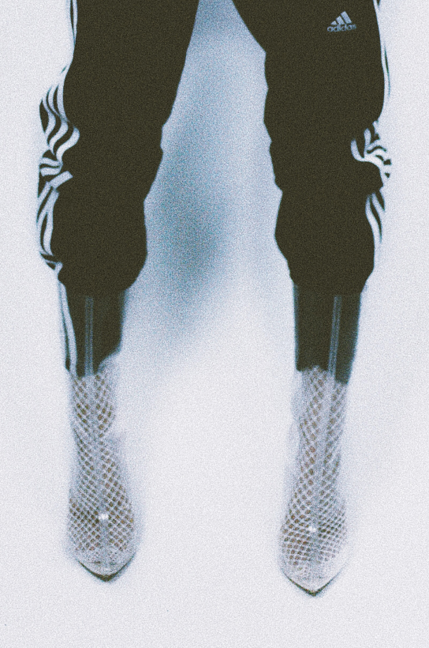
black addidas joggers worn with clear and white plastic booties
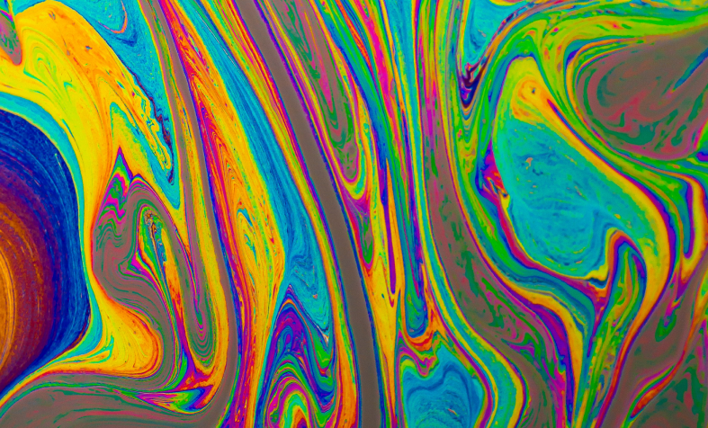
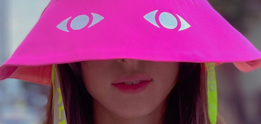
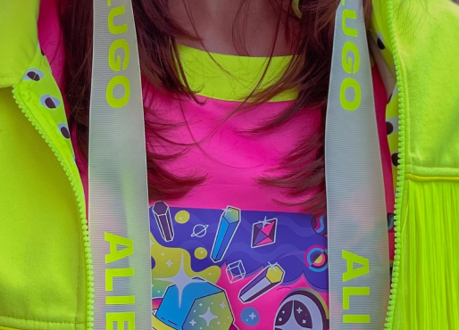
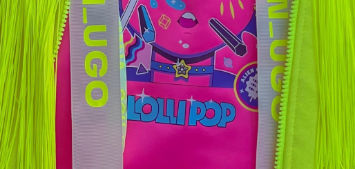
Historic Modern
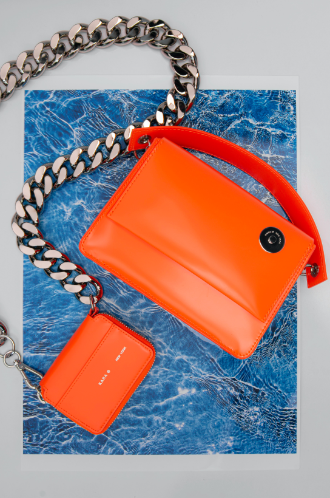
orange, Kara New York leather hand clutch with matching wallet with chunky chain strap
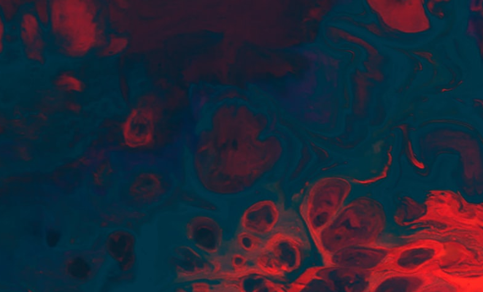
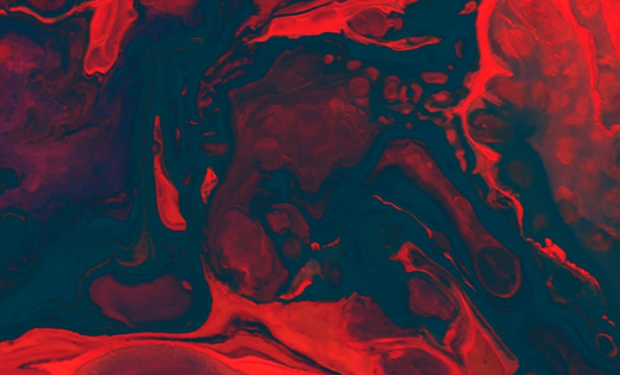
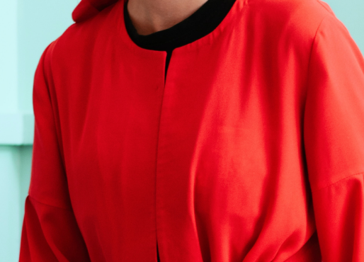
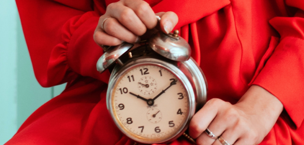
Pastel Plur
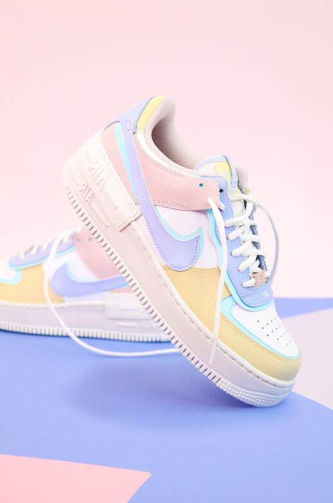
pair of colorful, pastel nike Air Force Ones
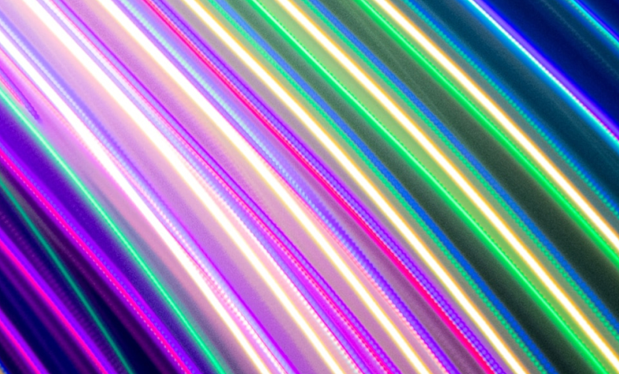
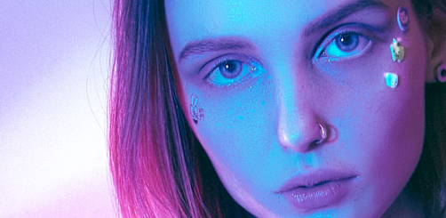
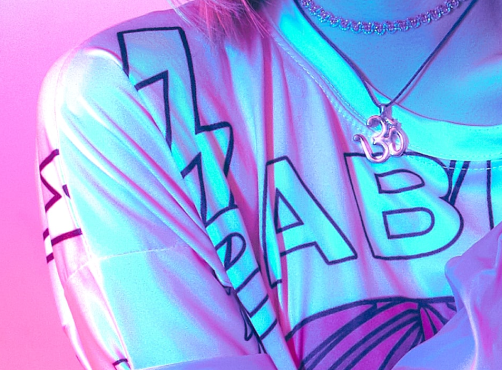
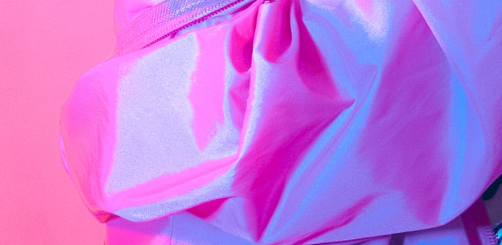